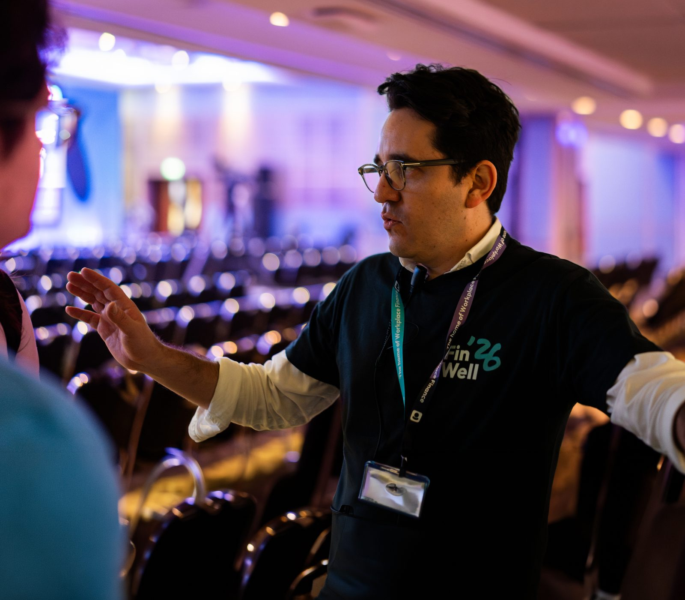

I'm Raul, an editor and filmmaker with 14 years of making things people actually watch: TV spots, brand films, an 18-episode podcast, live events. These days I'm also Head of Creative AI, which mostly means I prototype with generative tools the way I used to prototype with a camera: fast, hands-on, only keeping what works. I built a studio from nothing, trained the crews that run it, and I still cut every day. Editor first, technologist second.